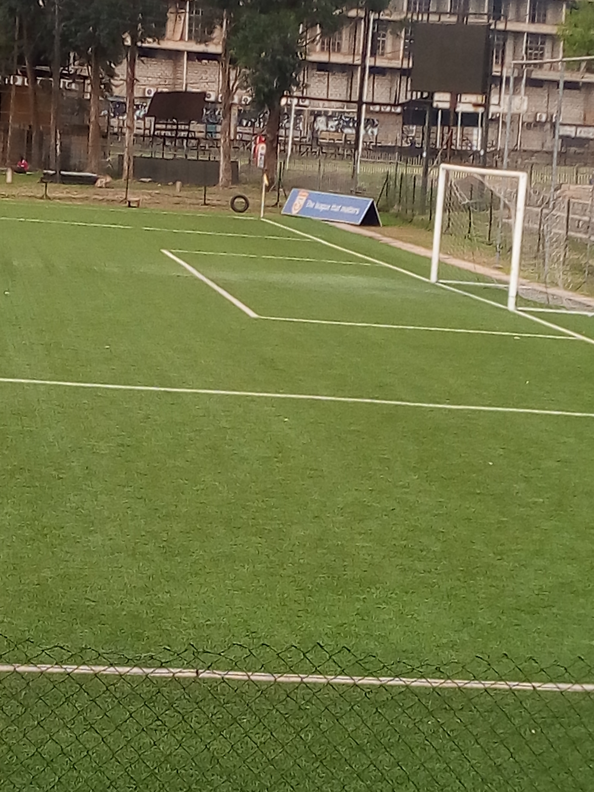

A:Personal Information.
- Name: KASOZI KENNEDY.
- Date Of Birth: 28th/DECEMBER/2000.
- Nationality: Ugandan.
- Village: NATWALA.
- Parish: MUDUMA.
- Sub-County: KIRINGANTE.
- County: MAWOKOTA.
- District: MPIGI.
- Country: UGANDA.
B: Education Background.
- Grand Maria Nursery School.
- HOPE Primary School.
- HOPE SENOIR SECONDARY SCHOOL FOR O`LEVEL STUDIES.
- ST.MARY`S BOARDING SECONDARY SCHOOL KITENDE FOR A-LEVEL.
- Mubs University -Nakawa Campus.
- HOPE Institute WATOTO.
- Uganda Martyrs University - Nkozi Campus.
C: Working Exprience
2009-2012 CAPTAIN OF HOPE JUNIOR PRIMARY SCHOOL
Won 3 tropies
2009-Mukasa Cup
2010-Kabaka Cup
2012-Airtell Raising Stars
2013-2016 CAPTAIN OF HOPE SENIOR SECONDARY SCHOOL
2013-Inter HSE Tropie
2014-Zoin Champions Mpigi District
2015-Challange cup (w@t0t0)
2016-zoin & District champions COPA
2017-2018 ST.MARY`S BOARDING SCHOOL KITENDE
2017-COPA COCACOLA Runner UP
2017-FEASSSA Champions
2018-Wakiso District COPA Champions
2018-SIGNED ON VIPERS SC
2018-POLICE FC ON LOAN
D: Hobbies.
- Playing football.
- Visiting friends.
- Playing video games.
- Watching Movies.
E: Responsibilities held.
- Class prefect P5 2008-Hope Primary School.
- Sports Prefect 2011 P6 Primary School.
- sports Prefect 2016 S.4 Hope Secondary School.
F: Refferies.
- Mr. Wassago Dennis- Head Coach watoto sports Acamdy Gulu.
- Mr. Mutebe Matthew- Headteacher kings Primary School.
- Mrs. Nakazibwe Hadijjah -Senior woman Watoto child care ministry.
For more information contact me:
© Copyrite 2019 @KENO#11.
|